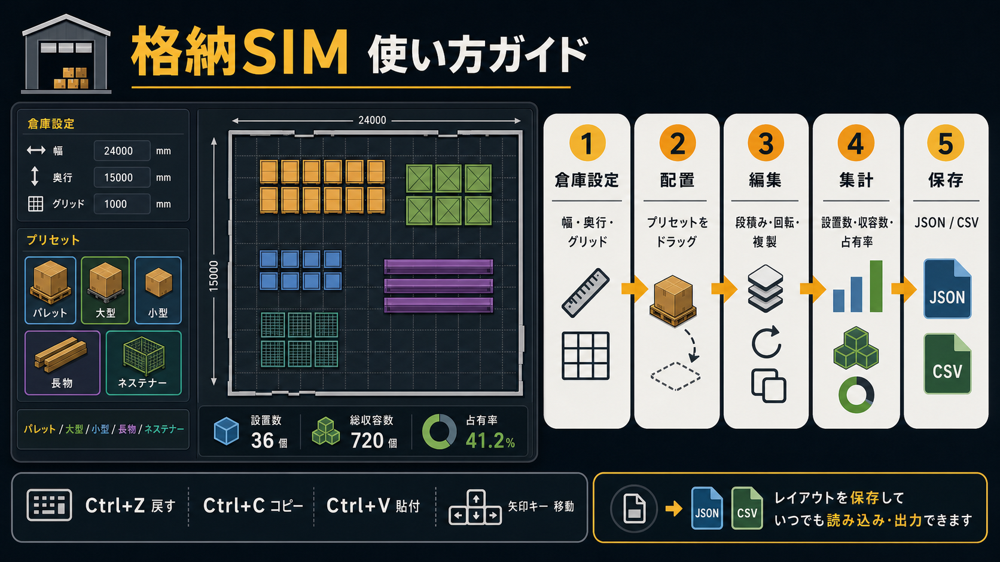

倉庫格納シミュレーター
倉庫内の荷物配置をドラッグ操作で作成し、床面積、収容数、占有率、Before / After差分を確認できるレイアウト検討アプリ。

課題
- 倉庫内の荷物配置を、感覚やメモだけで検討すると面積・収容数・通路の影響を比較しづらい。
- 配置変更後に、どれだけ改善したのかを数値で説明しにくい。
- 複数ロケーションの検討結果を一覧化し、あとから見直せる形で残したい。
アプリのアプローチ
- 倉庫サイズ、グリッド、荷物プリセットを設定し、床面上へドラッグして配置を作成。
- 荷物・柱・通路を分けて扱い、有効床面積と使用床面積を分けて集計。
- Before保存後の変更差分を表示し、配置改善の結果を比較しやすくする。
主な機能
- 荷物プリセットの追加、配置、移動、回転、複製、削除。
- 設置数、総収容数、使用床面積、空き有効床、占有率のリアルタイム集計。
- Before / After比較、倉庫一覧への記録、JSON保存・読込、CSV出力。
技術スタック
- HTML / CSS / JavaScript の単一HTMLアプリ。
- ブラウザ上で完結するドラッグ操作とレイアウト計算。
- 外部APIなし。保存・読込はJSONファイルとブラウザ内の記録機能を利用。
note記事リンクは設定していません。アプリ本体は同じフォルダ内の単一HTMLで動作します。